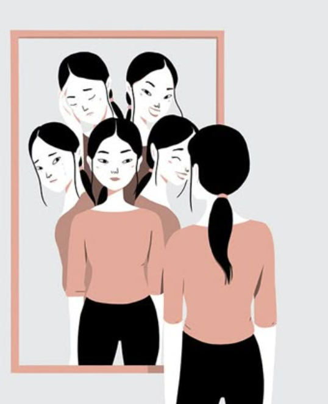

למה מצב הרוח שלי משתנה כל כך מהר? פעם אני צוחקת, ופעם בא לי לבכות 🌟
לפעמים מרגישים מבולבלים... רגע אחד צוחקים, וברגע הבא נעלבים בלי סיבה
ברורה.
למה זה קורה לי?
שינויים הורמונליים, לחץ רגשי, ותנודות במצב הרוח – כל אלה נורמליים לגמרי
בגיל הזה.
מה אפשר לעשות? 💡
- 📕 מעקב רגשות
- ⛹️ פעילות גופנית
- 🧑🧳 שינה ותזונה
- 🌿 להיות עדינה עם עצמי
- ✍️ כתיבה אישית
- 🎧 מוזיקה שאני אוהבת
- 🚶♀️ לצאת להליכה
- 💬 לשתף מישהי קרובה
- 🏠 לסדר את החדר
כתבי איך את מרגישה כל יום – זה יעזור לך לזהות דפוסים.
ספורט עוזר לשחרר אנרגיה ולשפר את מצב הרוח.
שינה טובה ותזונה נכונה משפיעות מאוד על התחושות.
תהיי עדינה עם עצמך. כולן עוברות תקופות כאלה – זה טבעי.
נסי לכתוב בלי שיפוט. רק תכתבי מה עובר עלייך. זה משחרר.
שירי רקע שאת אוהבת יכולים להרגיע ולעודד.
הליכה באוויר הפתוח מרגיעה ועוזרת לחשוב.
שיחה עם מישהי שאת סומכת עליה – יכולה להקל ממש.
חדר מסודר עוזר להרגיש שליטה וניקיון גם בפנים.

🎥 סרטון מומלץ:
סרטון שיעזור לך לטפל בעצמך כשאת מרגישה מוצפת או מבולבלת רגשית
מרגישה שהיום את קצת לא את?
✨ כל רגש עובר. תמיד אפשר למצוא דרך לחזור לחיוך שלך. את חזקה ומדהימה ❤️
חזרה למפת המוח 🧠